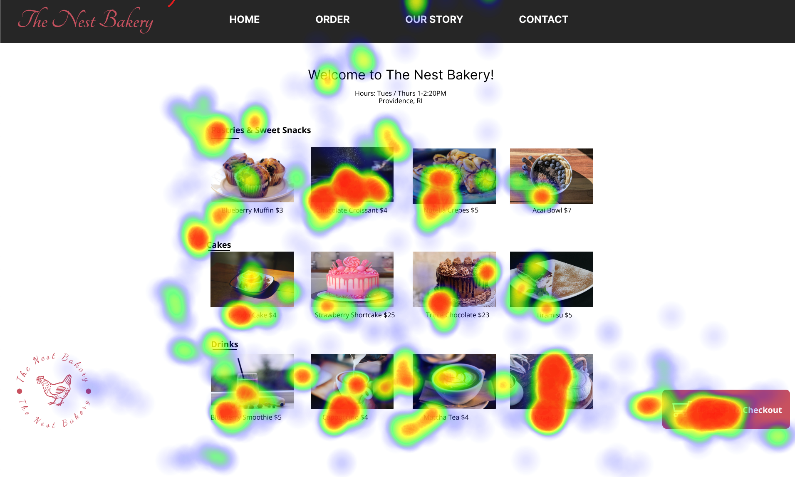
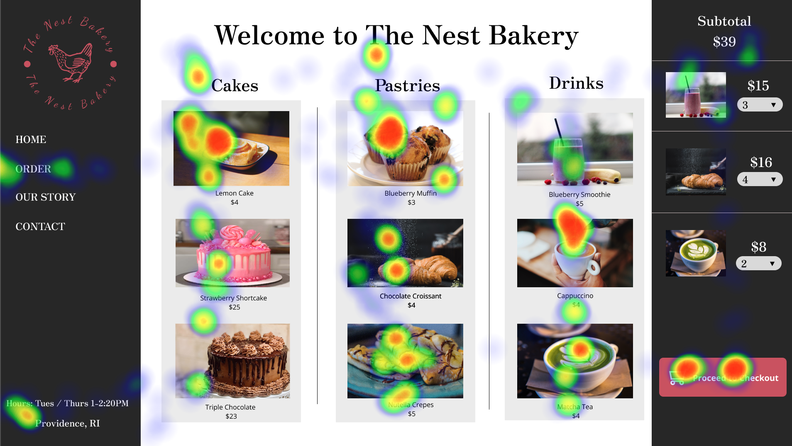
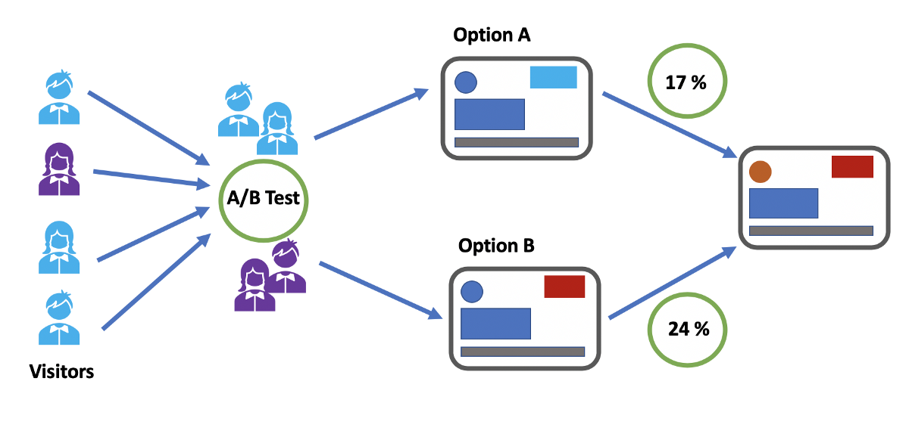
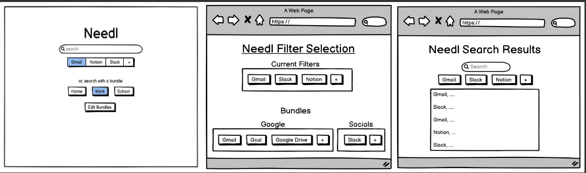
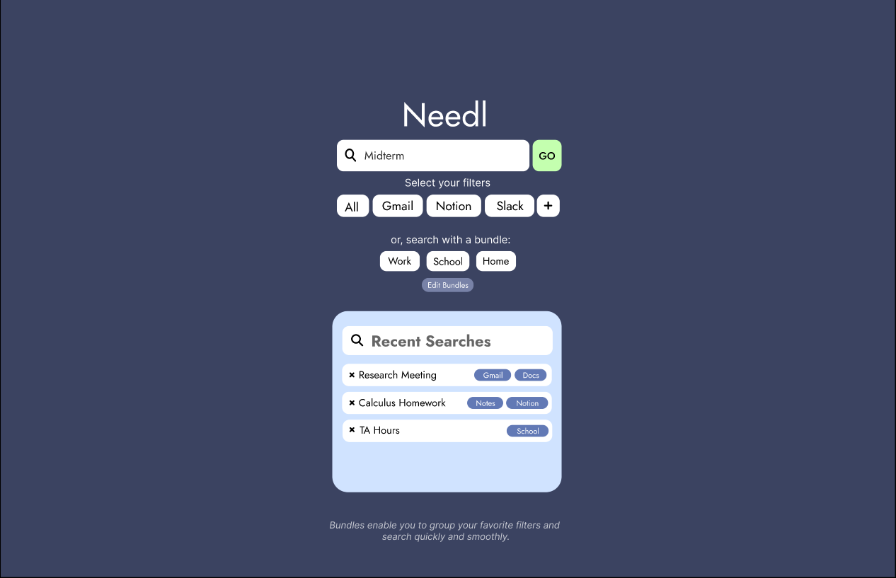
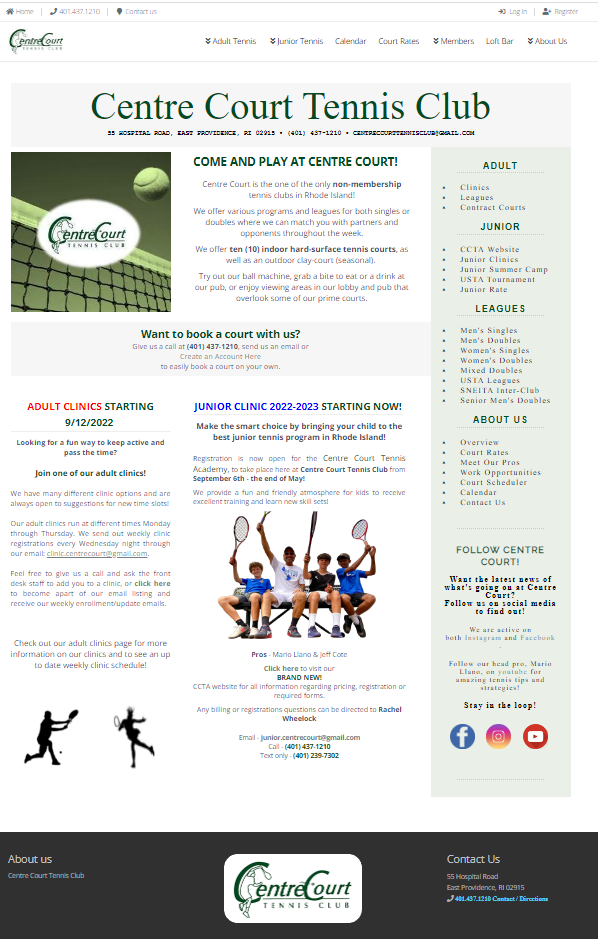
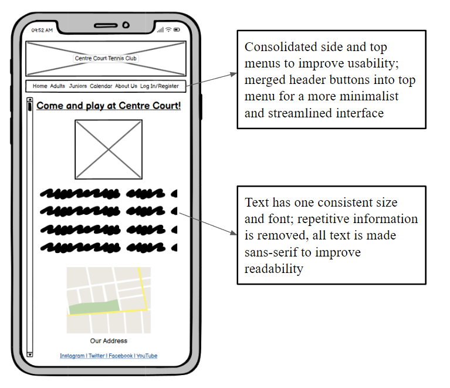
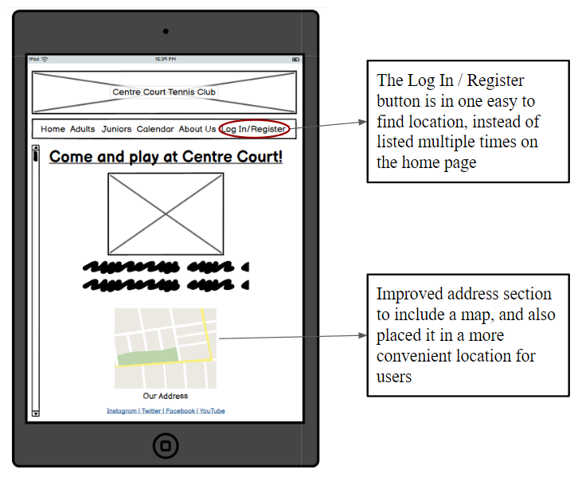
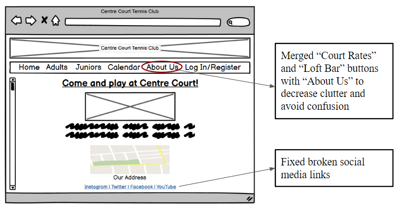

CautiousCat999's Final Portfolio
Hello! This is my final portfolio for UI/UX. This serves as a culmination of the work we have done throughout the semester.
As someone who has limited web development skills, the goal of this portfolio is to showcase the tools and frameworks I've learned in this course, spanning Balsamiq, Figma, HTML, CSS, React, and more!
A/B Testing
For this project, we conducted A/B eye testing on two different prototypes. This was to see the directions in which users viewed a given page, and what they
saw as important.
This helps us consider the layout of our pages in our design choices to most effectively convey information to the users.
We created two different prototypes of a bakery checkout page with different layouts to ascertain the direction of flow a user experiences on the site.
 Prototype A, with a horizontal layout, is quite random in terms of where users looked on the page.
In contrast,
users were able to better focus on individual items of interest in Prototype B, which has a more vertical layout.
This suggests that verticality aids users in their decision-making process more than horizontal designs.
What is A/B testing, anyways?
A/B testing is a crucial step in the design process.
Any commonly viewed webpage, such as the Google home page or Facebook feed screen, has undergone rigorous A/B testing resulting in the layout and design we see today.
Iterative Design
For this project, we iteratively designed a search engine.
This search engine seeks to locate information across platforms, including Gmail, Slack, and Notion.
Similar to Spotlight search on Mac devices, it returns a list of most relevant results to the search query.
We started with creating some wireframes.
From here, we created a hi-fi prototype in Figma.
Figma Link
What does it mean to iteratively design something?
An iterative design refers to one that consistently incorporates outside feedback into creating a better product.
In this case, we received critiques from our peers, an industry professional, and also user testers, utilizing their feedback
to make our product more streamlined and accessible.
What is a User Tester?
A User Tester is someone who is a professional in evaluating products for their usability.
For this project, we had three User Testers try out our Figma prototype and share their thoughts with us.
We found that adding logos and expanding our bundles selection aided these UserTesters in completing their assigned tasks.
We were also surprised to find that despite the many functions of our product, they found it easy to learn and pick up, commenting on how straightforward it was.
Responsive Redesign
For this project, we responsively re-designed a website.
What does it mean for a design to be responsive?
When we use the phrase responsive, we are typically referring to a design that scales well to a variety
of screen sizes.
What this means is that content shrinks and expands accordingly in a way that is adaptable, ie.
not a static fixed pixel size.
Original Website Design:
From this, numerous usability and accessibility issues were identified. Some of these were rectified in lo-fi prototypes.
  Finally, the website was re-designed in HTML and CSS, which can be viewed here:
Redesigned Website
Why is website redesign important?
Website redesign is important because user preferences change frequently, as do the technologies available to us.
When a website was first designed, a certain layout may have made sense with its market and technological capabilites at the time.
However, the Internet is a constantly evolving space in need of adaptable interfaces.
Thus, website redesign is a vitally important task for any business to conduct in regular intervals.
Personas and Storyboarding
For this project, we explored user personas and how users interact with interfaces.
What is an interface?
An interface is a shared boundary between two seperate entities; in this case, we are referring to a method of communication between a computer and a human.

What is a persona?
A persona is a collection of observable attributes and qualities that make up a given individual.


What is a storyboard?
A storyboard is a visual representation of a user's experience from start to finish with an interface.

Why are personas and storyboarding important?
Personas are important because they help us understand the qualities and traits a user might have, and how those impact their interactions with interfaces.
Storyboards, on the other hand, help us envision a user's entire experience with an interface from start to finish, giving us the opportunity to implement design principles with this in mind.